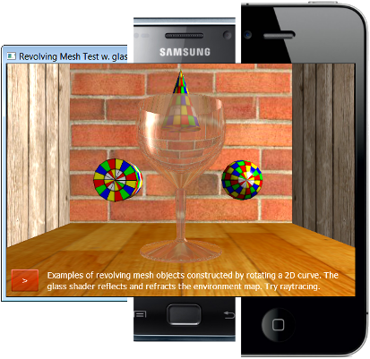

Welcome to the SLProject
SLProject is a plattform independent 3D computer graphics scene graph library
SL stands for Scene Library. It is developed at the Berne University of Applied Sciences (BFH) and is used for student projects in the cpvrLab. The various applications show what you can learn in one semester about 3D computer graphics in real time rendering and ray tracing. The framework is built in C++ and OpenGL ES 2.0 and runs without changes on Windows, Linux, Mac OSX, Android and Apple iOS. The framework can render alternatively with Ray Tracing and Path Tracing which provides in addition high quality transparencies, reflections and soft shadows. You can find the demo app also on the Android Market.

Read the following pages for more information:
- SLProject Features
- Build instructions with MS Visual Studio
- Build instructions with QtCreator under Windows, OSX or Linux.
- Build instructions for the Android build with Visual Studio
- Build instructions for the iOS build with Apple XCode
- Minimal OpenGL Applications in C++, C#, Java and WebGL
- Repository folder structure
- Coding Style Guidelines for Contributors
- How to generate the HTML Documentation using Doxygen
- Online HTML Documentation